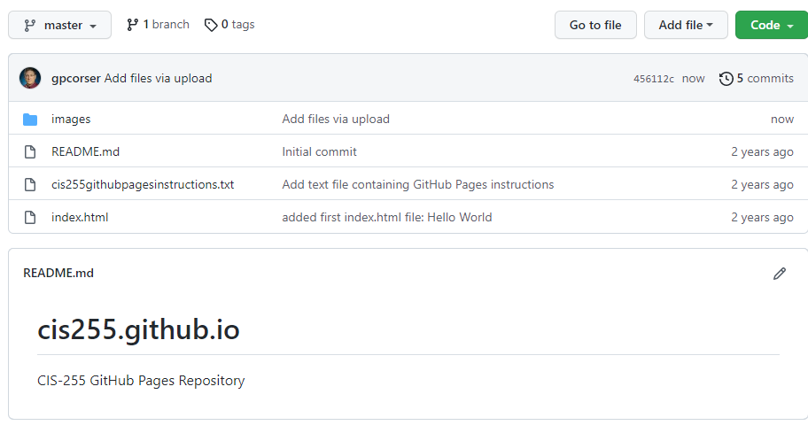

Demonstration page for beginner's front end web dev course
1. Log in to GitHub and navigate to your repository.
2. Click "Add file" button.
3. It says "Name your file" but you can type a subdirectory name too if you want.
4. Type the name of the subdirectory you want to add.
5. When you type a slash, /, it automagically opens a new box for you to type a file name.
6. Just create an empty text file.
7. Now you have an empty text file in a new subdirectory! Now click "Add file" button again and choose "Upload files".
8. Drag-drop your files and click "Commit" button. 
9. Now your files in the subdirectory you created! Click the subdirectory name and you will see them listed.

10. See?
11. Visit your GitHub pages page and you will see the files there!